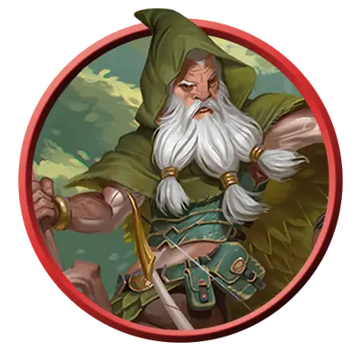

Кентавр смотритель
Centaur Warden
Большая Фея, Нейтральная Добрая

Класс Защиты 16 Инициатива +2 (12)
Хиты 105 (14к10 + 28)
Скорость 50 футов
| мод | спас | ||
|---|---|---|---|
| СИЛ | 18 | +4 | +4 |
| ЛОВ | 14 | +2 | +2 |
| ТЕЛ | 14 | +2 | +5 |
| мод | спас | ||
|---|---|---|---|
| ИНТ | 9 | −1 | −1 |
| МДР | 18 | +4 | +7 |
| ХАР | 11 | +0 | +0 |
Чувства пассивное Восприятие 17
Языки Друидический, Сильван, Эльфийский
Опасность 7 (2 900 опыта; БВ +3)
Действия
Мультиатака. Кентавр совершает две атаки Лесным посохом или Солнечным лучом в любой комбинации.
Лесной посох. Бросок рукопашной атаки: +7, досягаемость 5 фт. Попадание: 13 (2к8 + 4) Дробящего урона плюс 14 (4к6) урона Ядом.
Солнечный луч. Бросок дальнобойной атаки: +7, дистанция 90 фт. Попадание: 14 (3к6 + 4) урона Излучением, и цель Ослеплена до начала следующего хода кентавра.
Сотворение заклинаний. Кентавр сотворяет одно из следующих заклинаний (заклинательная характеристика — Мудрость, Сл спасброска заклинаний 15):
Неограниченно: Искусство друидов, Разговор с животными
Бонусные действия
Опутывающий проход (Перезарядка 5–6). Кентавр перемещается на расстояние вплоть до своей Скорости, не вызывая Провоцированных атак. Каждое существо в пределах 5 футов от перемещающегося кентавра становится целью следующего эффекта. Спасбросок Силы: Сл 15. Провал: 11 (2к6 + 4) Дробящего урона, и цель Опутана до конца своего следующего хода.
Бонус мастерства +3
Среда обитания Город, Подземье
Сокровища Отсутствуют
Кентавры
Защитники Страны Фей
Кентавры — защитники лесов, равнин и мест сосредоточения первозданной силы. Эти существа с туловищем коня, но головой и грудью человека вступают в сражение со всеми, кто хочет навредить их союзникам.
Как правило, кентавры-смотрители возглавляют отряды кентавров-кавалеристов и выступают посредниками между Феями и теми, кто осмелился нарушить границы их владений.